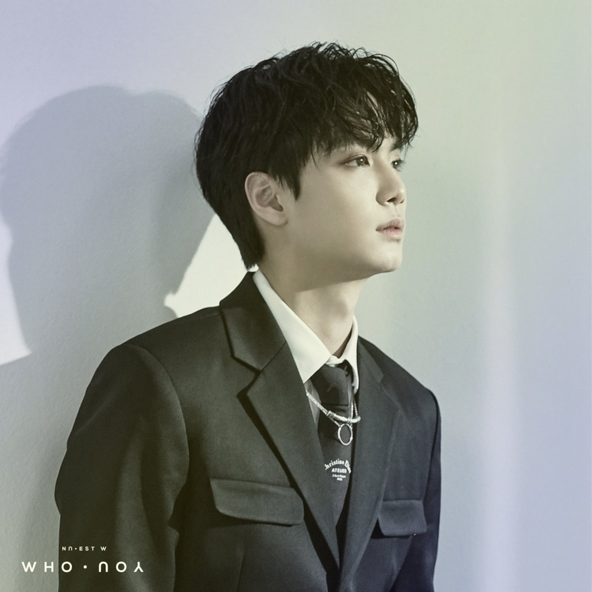

한국의 가수. 5인조 보이그룹 뉴이스트의 리더이자 메인래퍼, 메인댄서를 맡고 있다. 예명 JR은 'Junior Royal' 의 약자이며 무대 위에서 '작은 귀족'이 되라는 의미로 플레디스엔터테인먼트의 한성수 사장이 지어 준 것이다.
데뷔 전인 2011년 애프터스쿨 보이즈 시절에 유이의 '쏙쏙쏙'에 피처링하였으며,[28] 오렌지캬라멜의 '방콕시티' 뮤비에 출연하였다. 2016년 8월에 발매된 미니 앨범 5집 'CANVAS' 의 수록곡이자 멤버 민현과의 듀엣곡 'Daybreak' 를 함께 공동 작사했다.[29]
2017년 황민현, 백호, 렌과 함께 뉴이스트 활동을 잠정 중단하고 프로듀스 101 시즌2에 연습생 신분으로 참여했다. 뉴이스트 활동 기간 5년을 합친 연습 기간은 총 8년 2개월로 프로듀스 101 시즌2에 참여하는 플레디스 소속 연습생들 중 가장 길다. 프로듀스 101 시즌2 데뷔조 탈락 후 뉴이스트로 돌아오게 되었다.
